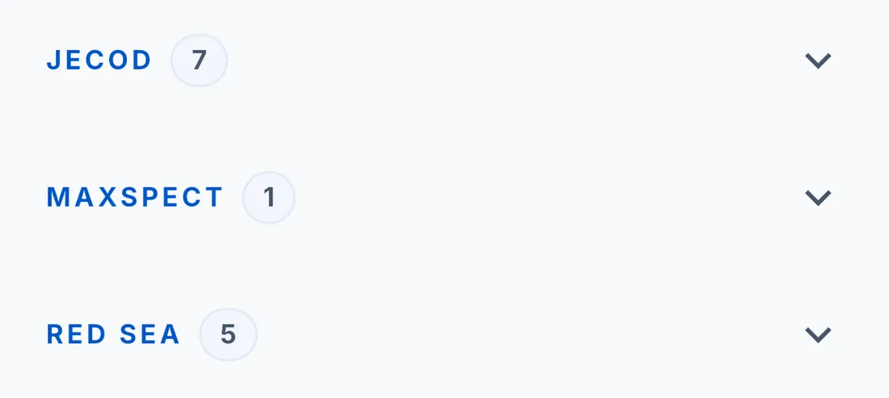
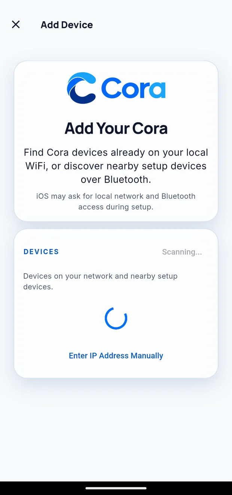

Adding, editing and removing devices
The Devices tab is everything you have connected, grouped by brand. Each group collapses so a reef room full of equipment stays readable.

Adding equipment
Three buttons sit below the list, and they do different jobs:
| Button | Adds |
|---|---|
| Add Device | Cora hardware. Finds units already on your WiFi, or nearby ones over Bluetooth. Enter IP Address Manually is inside this screen if discovery does not find it. |
| Find a pump on your network | Jecod pumps that advertise themselves on the local network |
| Add AquaWiz | An AquaWiz controller, through your AquaWiz account |

Other equipment — Neptune Apex and Red Sea ReefBeat — is connected from the tank rather than from this list. See Connecting your gear.
Assigning a device to a tank
Every device belongs to a tank. That is what makes its readings appear on that tank's dashboard.
Open the device and choose Tank. If you run more than one system, this is the setting that matters most — a heater reporting into the wrong tank will look like a mystery.
Renaming
Open the device and edit its name. Use whatever you call it out loud — "Return", "Left gyre", "Sump heater". The name appears on widgets, in alerts and in anything you ask Cora, so a name that means something to you makes everything downstream clearer.
Renaming is local to Cora. It does not change the name on the manufacturer's own app.
Checking whether a device is healthy
Each row shows its current state. What you want to see is a recent update time and no warning.
| What you see | What it means |
|---|---|
| A recent update time | Working normally |
| "Updated 3 h ago" on something that reports hourly | Fine |
| "Could not reach…" | A network problem, or the device is off |
| "…refused the sign-in" | The manufacturer's account needs reconnecting — open the device and sign in again |
| Nothing at all | It has never reported; check the tank assignment and the connection |
Removing a device
Open the device and choose Remove. You will be asked to confirm, and told exactly what is being removed.
Your readings are kept. Removing a device stops Cora collecting new data from it; the history it already gathered stays on the tank, and any widget pointed at it keeps its past readings.
What you lose is the live link — and, where the device connected through a manufacturer account, the stored sign-in. Adding it back means signing in again.
Written for Cora Max 0.28.28 and Cora Mobile 0.5.52.
Still stuck? Email cora@coraiq.tech and we'll help.